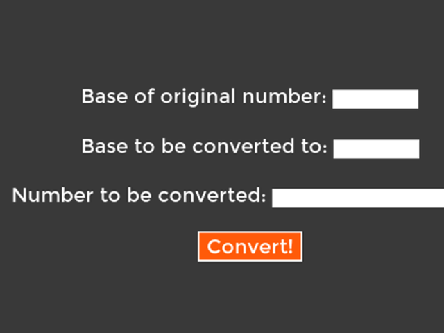
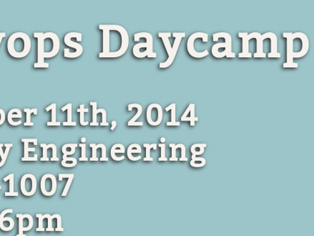

My work
Web Applications and Design
|

arbitrary-converter.herokuapp.com |

lucywyman.github.io/poems |

osuosl.org |

libreo.com |
|

osl.io/devopsdaycamp |
Presentations

Sass: Why it's so Syntactically Awesome |

Introduction to HTML and CSS |